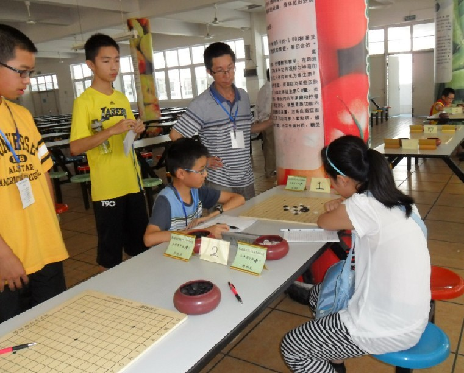
少年组比赛激战中。
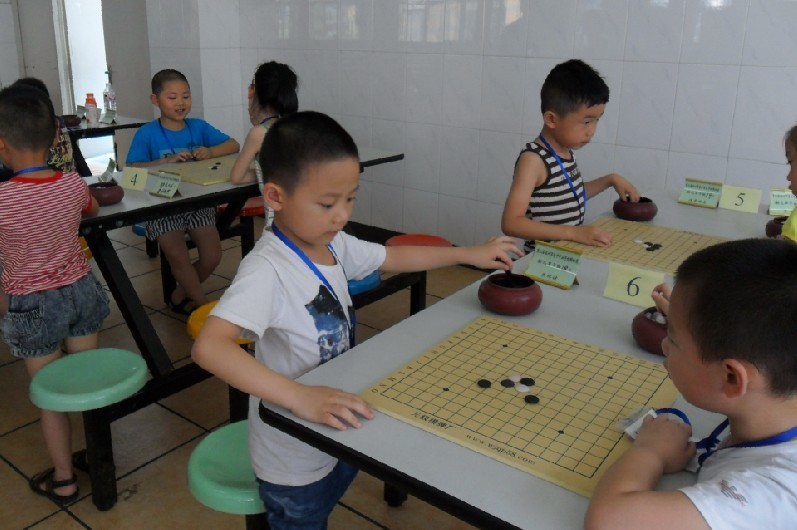
五手两打：）
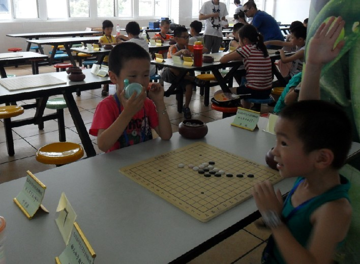
裁判，我五连了。
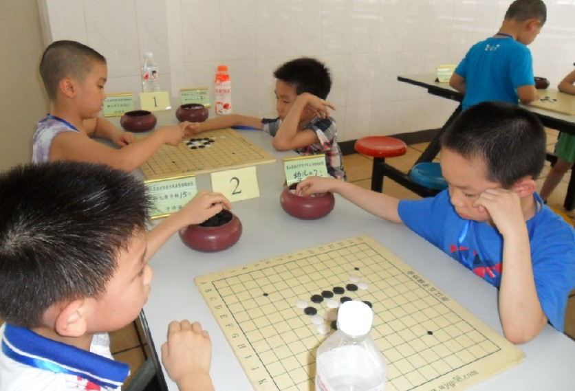
思想者。
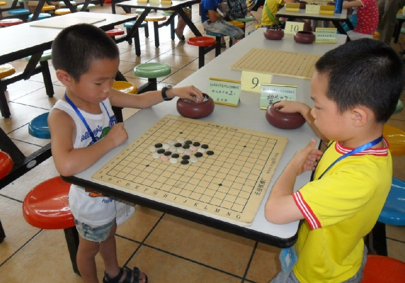
还是站着下看得清。
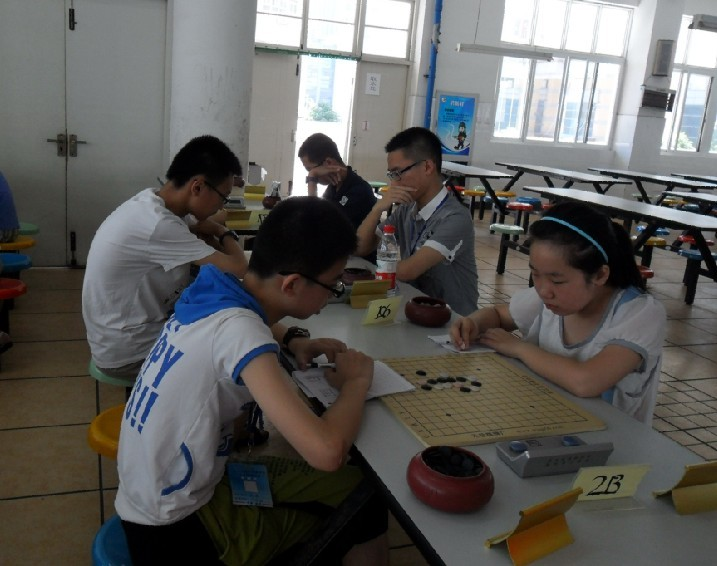
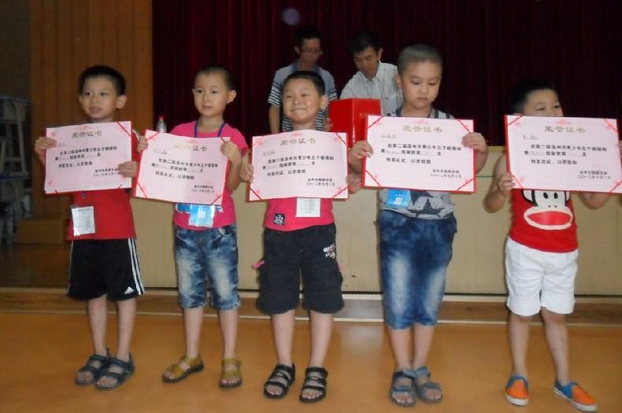
幼儿组前五名。
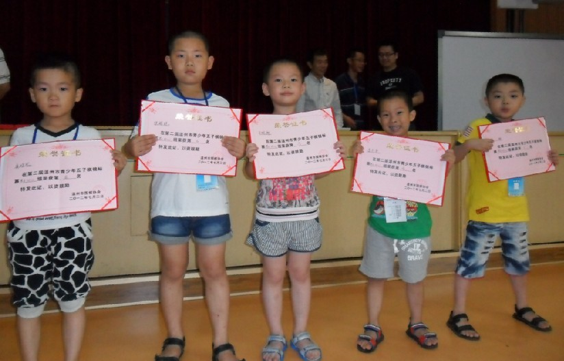
幼儿组六至十名。
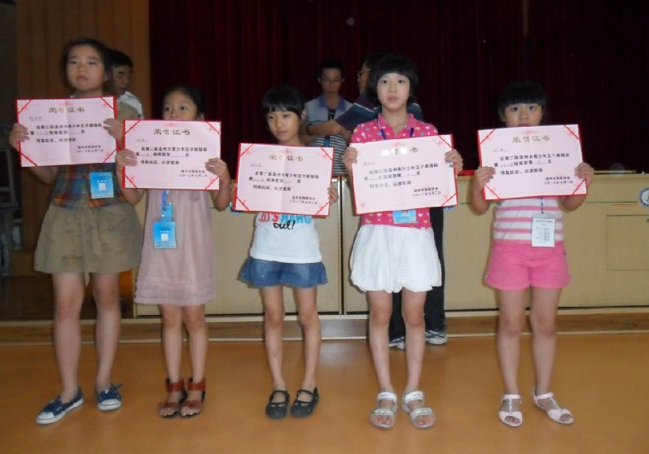
女子儿童组前五名。
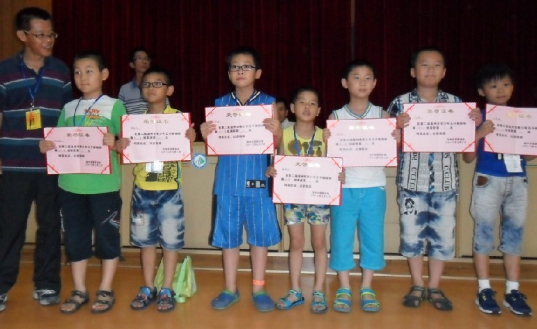
男子儿童组前七名。
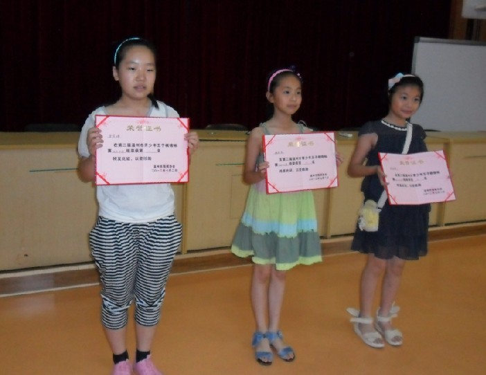
女子少年组前三名。
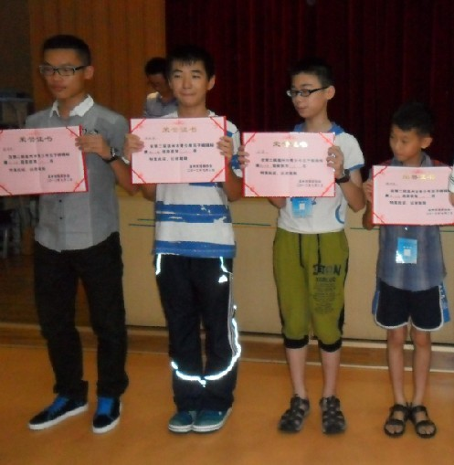
男子少年组前四名。
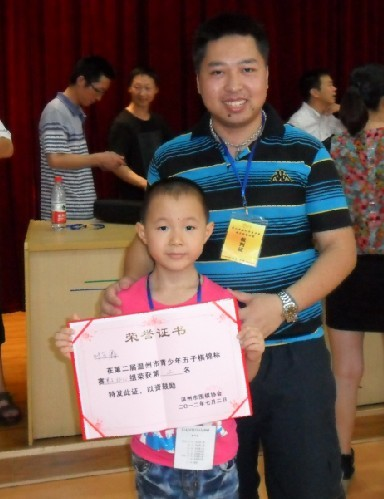
我和我的学生幼儿组亚军叶可欣。
温州市第二届青少年五子棋锦标赛于今日上午圆满结束，祝贺获奖小朋友：）
［此帖子已被 四川连珠魂 在 2012-7-2 16:16:24 编辑过］
［ 小红眼镜 于 2012-7-2 20:47:40 时花20金币送鲜花一朵］
［ 小红眼镜 于 2012-7-2 20:47:48 时花20金币送鲜花一朵］
［ 黄药师 于 2012-7-2 21:28:13 时奖励此帖[金币加 100 威望加1］
［ 黄药师 于 2012-7-2 21:28:32 时花20金币送鲜花一朵］
［ 黄药师 于 2012-7-2 21:28:32 时花20金币送鲜花一朵］
［ 黄药师 于 2012-7-2 21:28:32 时花20金币送鲜花一朵］
［ 黄药师 于 2012-7-2 21:28:32 时花20金币送鲜花一朵］
［ 黄药师 于 2012-7-2 21:28:32 时花20金币送鲜花一朵］
［ 黄药师 于 2012-7-2 21:28:32 时花20金币送鲜花一朵］
［ 黄药师 于 2012-7-2 21:28:32 时花20金币送鲜花一朵］
［ 黄药师 于 2012-7-2 21:28:32 时花20金币送鲜花一朵］
［ 卢老师 于 2012-7-2 22:20:18 时花20金币送鲜花一朵］
［ 凝霜 于 2012-7-14 18:45:04 时花20金币送鲜花一朵］
［ 凝霜 于 2012-7-14 18:45:04 时花20金币送鲜花一朵］
［ 凝霜 于 2012-7-14 18:45:04 时花20金币送鲜花一朵］
看到这些小娃娃下棋，真的很有感触，我小时候都不知道五子棋是什么，直到初中才在作业本上画圈圈叉叉下五子棋，那时候不懂规则，黑棋随便下花月走33、44，嘿嘿
这些幼儿组的小娃娃开什么局呢？他们行棋一定很快吧！真的想去现场观摩下，哈哈
引用：根据我多年的经验，12周岁以下，80%的战斗会在15分钟内结束！
原文由 山城刀客 发表于 2012-7-2 16:59:47 :看到这些小娃娃下棋，真的很有感触，我小时候都不知道五子棋是什么，直到初中才在作业本上画圈圈叉叉下五子棋，那时候不懂规则，黑棋随便下花月走33、44，嘿嘿
这些幼儿组的小娃娃开什么局呢？他们行棋一定很快吧！真的想去现场观摩下，哈哈

顶楼上的，是14次没错。